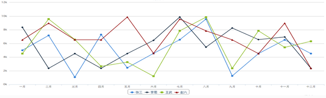
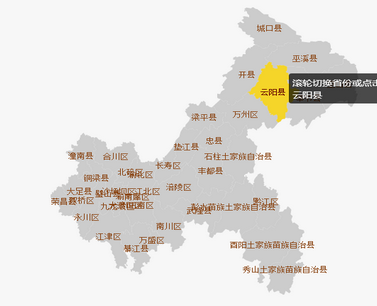
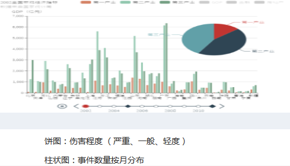
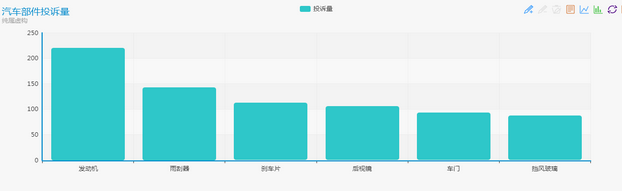

全部
汽车
家电
儿童玩具
电线电缆
家电
汽车
家电
儿童玩具
电线电缆
家电
汽车
这里放时间选择范围插件
今日新增占比情况
抽检不合格量
32辆
召回量
435辆
维保总量
534辆
投诉总量
32辆
数量变化趋势
四条线分布代表抽检不合格、召回、维保、投诉
企业分布

伤害分析
事件数量按月分布
投诉部件统计

近期网络评价倾向
评价内容
情感倾向
趋势
XX汽车2017年销量持平
中性
新买的车一股味道
负面
朗逸降价了
正面
新买的车一股味道
负面
朗逸降价了
正面
新买的车一股味道
负面